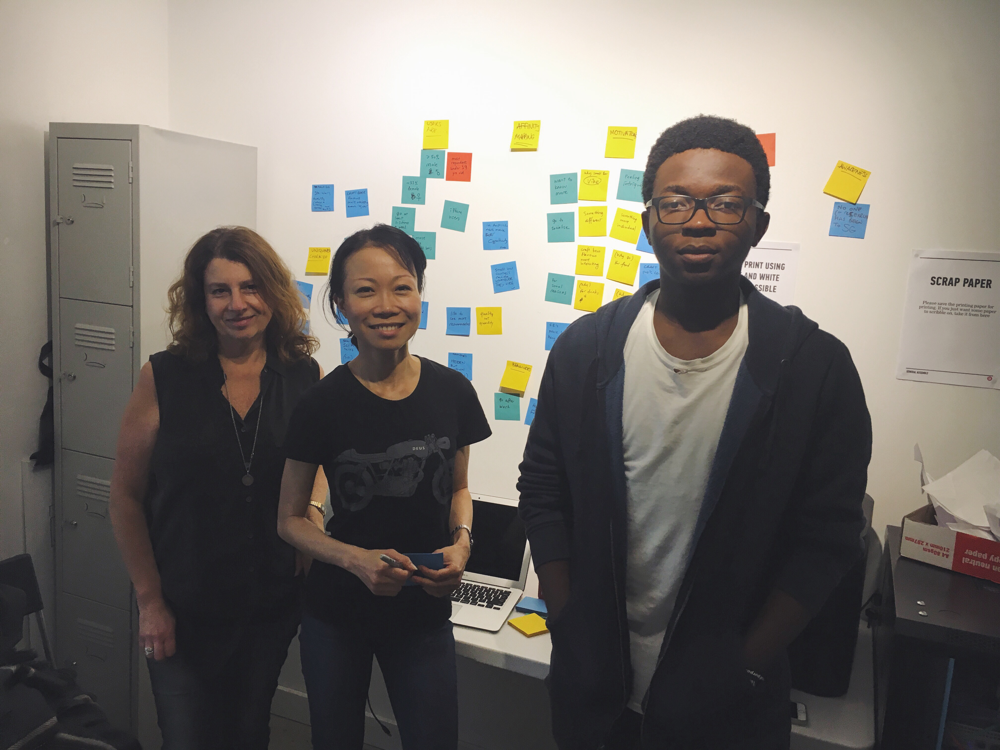
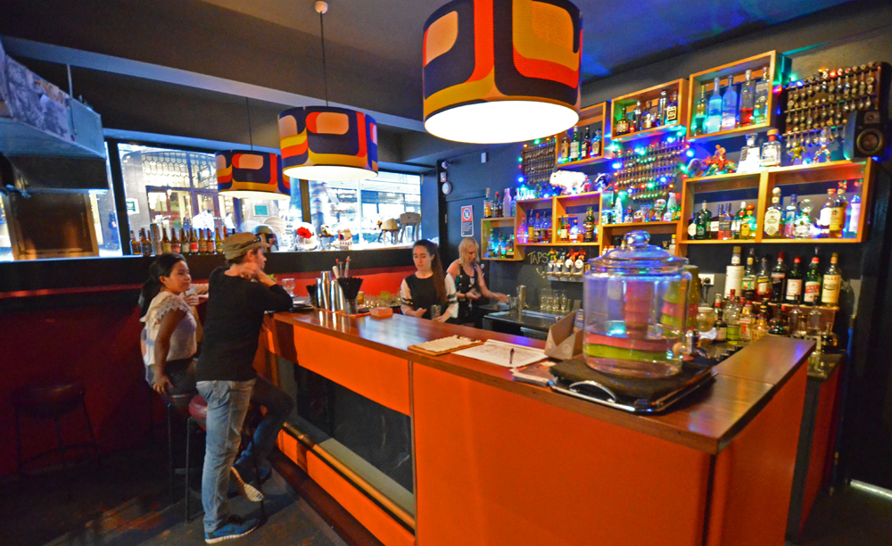

This project was the first time our class was presented with the challenge of a goup project.
My group colleagues were Melanie Braun(left) and Sylvia Luk(middle).
The project required us to:
was catered to help the students practice these three particular skills:
After our lecturers presented us with the project brief, we were told to select a target client who would become our primary target audience. Clients such as:
Allan's Billy Hyde
Mojo's record store
The SG bar
etc ...
The client that we chose was The SG bar
The first half of the project was comprised of a lot of research including Contextual Inquiry, Interviews, and Surveys.
The culmination of the results from our Surveys and the multiple sessions of Contextual inquiries lead to the discovery of some good responses and findings.
These findings consisted of information pertaining to people's motivations and habits during the process of going to a bar and searching for bars.
From our findings, we discovered that
HOWEVER
____________________________________________________________________
After gathering our findings, we came together summarized the results that we had been able together.
This was one of the more important times that we synthesized our research as it paved the way for the direction that we would take our project.
The client (The SG bar) wasn't too fussed about expanding their social media footprint i.e creating a website catered to the needs of both the client and potential customers who sought to know more about the SG
This was because they liked the adventure that came with people's curiosity when they wanted to find a small bar such as THE SG.
____________________________________________________________________
From all the research we had conducted, we then thought of methods that would be neccessary to begin ideating solutions.What we saw as neccessary was the creation of User Personas
as this would allow us to create fictional characters with real (general) characteristics that our research subjects had.
This User persona was one that I named Janice.

and ...

____________________________________________________________________